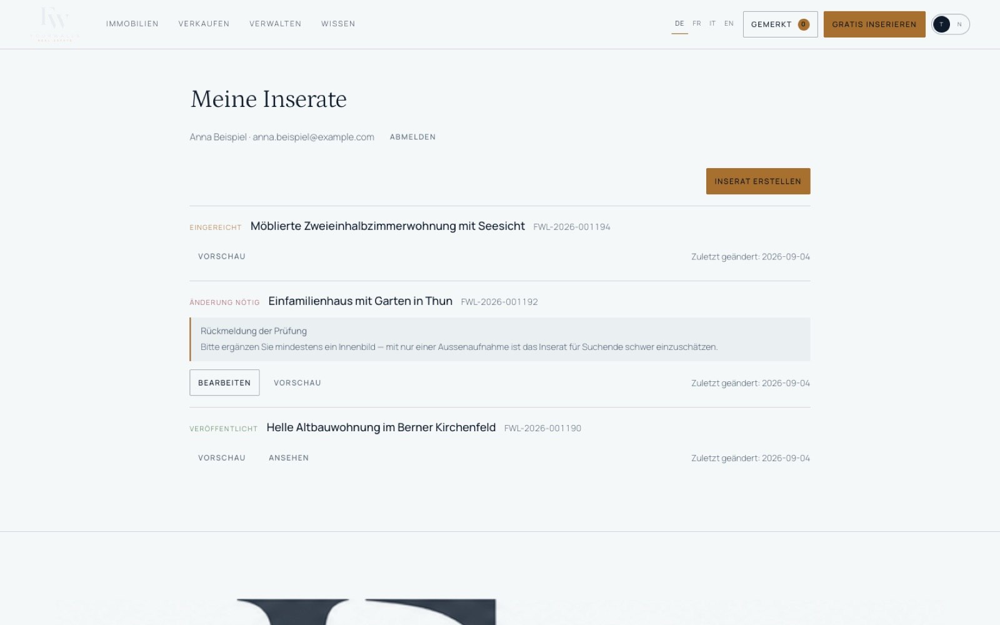

P5.2 hat ein Objekt bewiesen, P5.3 die Nachfrageseite. P5.4 musste zeigen, dass eine echte Person ein Objekt sicher an Fourwalls liefern kann: Konto, Entwurf, Autosave, Vorschau, Einreichung, Prüfung durch die Moderation, Veröffentlichung — und danach steht das Inserat in genau der Suche aus P5.3, ohne dass die Suche angefasst wurde. Diese Kette läuft.
Alle elf Stationen laufen als eine zusammenhängende Reise über HTTP gegen den Produktionsbau, nachweisbar in app/scripts/lieferkette-test.mjs.
| Bedingung (§91) | Beleg |
|---|---|
| Eine echte Person kann ein Konto anlegen und bestätigen | Better Auth 1.7.2 auf dem bestehenden app_user-Modell; Registrierung, Bestätigungsmail, Anmeldung, Abmeldung, Passwort zurücksetzen (Abschnitt 1–4, 16) |
| Sie kann ein Inserat als Entwurf erfassen | Neun Assistentenschritte gegen einen Server-Entwurf, listing.draft_data, Autosave nach 900 ms, Versionszähler (Abschnitt 5–7) |
| Nur sie sieht diesen Entwurf | Fremdzugriff auf Entwurf, Vorschau, Bild und Aktion antwortet 404, nicht 403 — keine Existenzauskunft (Abschnitt 9, 15) |
| Die Moderation entscheidet, nicht die Einreichende | veroeffentlichen durch die Eigentümerin → 403; Statuswechsel nur serverseitig über erlaubte Übergänge (Abschnitt 10, 12) |
| Jeder Entscheid ist nachvollziehbar | 8 Zeilen audit_log für drei Inserate, mit Akteur, Vorher-, Nachher-Zustand und Grund (Abschnitt 11) |
| Das veröffentlichte Inserat erscheint in der bestehenden Suche | Suche 178 → 179, Karte +1 Punkt, Objektseite in vier Sprachen mit 200 — ohne eine Zeile Suchcode zu ändern (Abschnitt 13) |
| Die private Adresse bleibt privat | Strasse und exakte Koordinate in keiner Antwort: Liste, Karte, Objektseite, RSC-Nutzlast, Bündel (Abschnitt 14) |
| UFER bleibt unangetastet | 16 von 16 Aufnahmen bei gleichem Datenbestand exakt gleich (0.00 %); die einzige spätere Abweichung ist das neue Inserat selbst (Abschnitt 17) |
Nicht gebaut, weil ausdrücklich untersagt: gekaufter Hosting-, Mail- oder Objektspeicherdienst; bezahlte Platzierung; Schweizer Staging. Nicht gebaut, weil ausserhalb des Auftrags: soziale Anmeldung, Passkeys, Zweitfaktor, Einmalanmeldung, ein neu gestalteter Assistent, ein Verwaltungsbereich für Rollen.
Geprüft wurden Better Auth und Lucia als zweite glaubwürdige Möglichkeit. Lucia ist seit 2025 keine Bibliothek mehr, sondern eine Anleitung: Man schreibt Sitzungen, Hashing und Zurücksetzen selbst. Das kollidiert mit §7 («niemals selbst bauen: Passwort-Hashing, Sitzungssignierung, Zurücksetz-Marken»). Damit fiel der Entscheid auf Better Auth, wie im Auftrag als Vorzug genannt.
| Abhängigkeit | Version | Art |
|---|---|---|
better-auth | 1.7.2 | exakt gepinnt, kein ^, kein latest |
pg | 8.16.3 | zweiter Verbindungspool, den Better Auth verlangt |
Unverändert aus P5.1–P5.3: next 16.3.4, react 19.2.0, postgres 3.4.7, zod 3.25.76, typescript 5.8.3, eslint 9.39.5. | ||
Zwei Abhängigkeiten kamen hinzu, sonst nichts. zod 4 liegt unter better-auth in dessen eigenem Baum; die Anwendung bleibt bei 3.25.76 — beide Versionen stören sich nicht, weil sie nie dieselbe Schemaobjekt-Instanz teilen.
Das Konto ist die bestehende Zeile in app_user aus P5.1, nicht eine zweite Personentabelle daneben. Better Auth wurde darauf abgebildet, statt seine Namen zu übernehmen:
user: { modelName: "app_user",
fields: { name: "display_name", emailVerified: "email_verified",
image: "image_url", createdAt: "created_at", updatedAt: "updated_at" },
additionalFields: {
platform_role: { type: "string", required: false, input: false, returned: true },
locale: { type: "string", required: false, input: false, returned: true } } }input: false ist die Stelle, die verhindert, dass jemand bei der Registrierung eine Rolle mitschickt (§66). Die Sitzung liegt in auth_session mit Verweis auf die Person, Ablaufzeitpunkt, IP und Browserkennung.
| Eigenschaft | Umsetzung |
|---|---|
| Cookie | fw.session_token; HttpOnly; SameSite=Lax; Path=/; Max-Age=604800, in Produktion zusätzlich Secure |
| Speicherung im Browser | keine — kein Token im localStorage, keine Kopie in sessionStorage (§9) |
| Rolle und Bestätigungsstand | bei jeder Anfrage frisch aus der Datenbank, nie aus dem Cookie gelesen (server/sitzung.ts, 66 Zeilen) |
| Passwort | scrypt aus der Bibliothek; Mindestlänge 10 Zeichen, keine Sonderzeichenpflicht, keine Höchstlänge unter 128 (§18) |
| Abmelden | serverseitiger Widerruf; dasselbe Cookie antwortet danach 401 (Prüfung H37) |
| Fremder Widerruf | Zeile in auth_session gelöscht → dasselbe Cookie antwortet 401 (Prüfung H38) |
Es gibt keinen isAdmin-Schalter. app/domain/rechte.ts (140 Zeilen, ohne Datenbank, ohne Netz) hält 13 Rechte und vier Rollen, und jede Entscheidung braucht zwei Zustimmungen: das Recht der Rolle und die Ressource (Eigentum plus Zustand).
| Rolle | Rechte | Bemerkung |
|---|---|---|
| visitor (keine Sitzung) | 0 | öffentliche Suche, öffentliche Objektseiten, Anfrage |
| user | 6 | eigene Inserate anlegen, bearbeiten, einreichen, ansehen, in Vorschau öffnen, zurückziehen |
| staff | 6 | wie user; ausdrücklich keine Moderationsrechte |
| moderator | 13 | zusätzlich Warteschlange, Prüfung, Freigabe, Änderung verlangen, Ablehnung, Veröffentlichung, Pausieren |
| admin | 13 | in P5.4 dieselben Rechte wie moderator; die Rollenvergabe läuft nicht über die Oberfläche, sondern über die Konsole |
Die zweite Achse ist die, die zählt. Eine Moderatorin darf die Warteschlange sehen — ihr eigenes Inserat aber trotzdem nicht freigeben, weil die Ressourcenprüfung eigenes-inserat zurückgibt. Ein Entwurf ist selbst für die Moderation unsichtbar, solange er nicht eingereicht ist. Die Ablehnungsgründe sind benannt (kein-recht, nicht-eigentuemer, falscher-zustand, email-unbestaetigt, eigenes-inserat, keine-sitzung) und in tests/rechte.test.ts einzeln geprüft.
Die Bibliothek durfte das Schema nicht übernehmen (§6). Es gibt keine Schemaänderung zur Laufzeit, keinen db:push-Aufruf im Start, kein automatisches Anlegen von Tabellen. Stattdessen zwei Wanderungen von Hand:
| Wanderung | Zeilen | Inhalt |
|---|---|---|
db/migrations/0011_auth.sql | 106 | app_user.email_verified und image_url; Auslöser, der email_verified_at mitführt; auth_session, auth_account, auth_verification mit UUID-Vorgaben und Fremdschlüsseln mit ON DELETE CASCADE |
db/migrations/0012_entwurf.sql | 49 | listing.draft_data jsonb mit Prüfbedingung «ist ein Objekt», listing.submitted_at, zwei Indizes (Warteschlange, eigene Inserate), moderation_case.message_to_owner und .reason |
Das genaue Sollschema kam nicht aus der Anleitung, sondern aus der Bibliothek selbst: getAuthTables() mit der eigenen Abbildung aufgerufen und Spalte für Spalte verglichen. So kam auth_account.issuer NOT NULL zum Vorschein — in der Anleitung nicht erwähnt, ohne diese Spalte scheitert jede Registrierung. advanced.database.generateId: false überlässt die Schlüsselvergabe den uuid-Vorgaben der Datenbank.
Ein Entwurf ist eine Zeile in listing mit Status draft und einem draft_data-Objekt. Die Richtung ist immer dieselbe: Eingabe → Entwurf → veröffentlichte Form, nie zurück. listing und property tragen weiterhin nur, was veröffentlicht wurde; die getippten Spalten werden erst bei der Veröffentlichung aus dem Entwurf gefüllt (materialisieren()).
Das Schema in app/domain/entwurf.ts ist zugleich die Erlaubnisliste. Es endet auf .strict(), kennt nur Assistentenfelder und weist alles andere ab — status, ownerId, platform_role, published_at führen zu 422, nicht zu einem stillen Verwerfen.
| Feld der Zeile | Bedeutung |
|---|---|
owner_user_id / contact_user_id | die Person, die den Entwurf angelegt hat — vom Server gesetzt, nie aus dem Körper der Anfrage |
version | Zähler, den ein Auslöser bei jeder Änderung erhöht |
created_at / updated_at / submitted_at | Zeitstempel; submitted_at ordnet die Warteschlange |
status | der bestehende Zustandsautomat aus P5.1, unverändert |
Die Lage ist strukturiert wie in P3 und P5.3: eine Ortsentität aus dem Index, kein freier Text. Strasse und Hausnummer bleiben ungeprüft und privat, weil es keinen Adressdienst gibt — es wurde keiner erfunden und keine Koordinate geraten. Die Genauigkeit wählt die Person zwischen ungefähr und Gemeinde; exakt ist gesperrt, solange keine geprüfte Adresse vorliegt. Der öffentliche Punkt entsteht auf dem Server aus dem Gemeindemittelpunkt.
Das Speichern ist echt: nach 900 ms Ruhe geht der Stand an PATCH /api/entwuerfe/<ref>, mit der zuletzt gelesenen Version. Der Server schreibt nur, wenn diese Version noch stimmt:
UPDATE listing SET draft_data = $neu, content_locale = $sprache
WHERE public_ref = $ref AND version = $gelesen
RETURNING version;
-- keine Zeile zurück → 409 CONFLICT, nichts überschriebenDie Oberfläche zeigt drei Zustände: Speichern …, Gespeichert, Nicht gespeichert. Der Fehlerfall wurde im Browser vorgeführt, indem die Datenbank angehalten wurde: Die Anzeige sprang auf NICHT GESPEICHERT und blieb dort, bis der Server wieder antwortete — sie hat zu keinem Zeitpunkt «Gespeichert» behauptet (§76). Der Versionsverlauf einer Sitzung ist im Reisebericht nachlesbar: 1 → 2 → 3 → 4, jede Antwort mit höherer Zahl als die vorige.
Der neunstufige Assistent aus P4 wurde nicht neu gestaltet, sondern angeschlossen: Absicht, Objektart, Lage, Fakten, Preis, Text, Bilder, Kontakt, Prüfen. Dieselbe Reihenfolge, dieselben Begriffe, dieselbe Optik.
Vollständigkeit ist objektartabhängig, wie im Prototyp: kein Zimmerzwang bei Parkplätzen, keine Wohnfläche bei Land, kein Kaufpreis bei Miete, dafür eine Grundstücksfläche beim Grundstück. Fehlt etwas, nennt der Server Feld und Schritt, damit die Oberfläche dorthin springen kann. Ein anonymer Anfang bleibt erhalten: Wer ohne Konto beginnt, findet seinen Stand nach der Registrierung wieder; der Übergabespeicher liegt im sessionStorage und enthält keine fremden Kennungen.
Es wurde kein Objektspeicher gekauft (§79). Die Bilder liegen unter app/var/uploads und werden ausschliesslich über /api/medien/<id> ausgeliefert, nie über einen öffentlichen Pfad.
| Prüfung beim Hochladen | Regel |
|---|---|
| Art | aus dem Inhalt bestimmt (Magic Bytes), nicht aus Endung oder MIME-Angabe; JPEG, PNG, WebP |
| SVG | abgewiesen — SVG ist ausführbares Markup |
| Grösse | höchstens 8 MB, mindestens 400 × 300 Punkte, höchstens 60 Bilder je Person |
| Dateiname | aus der UUID gebildet (<uuid>.jpg); die Eingabe wird nie Teil des Pfads — ../../etc/passwd erzeugt einen gewöhnlichen UUID-Namen |
| Metadaten | EXIF, GPS und XMP werden entfernt, bevor die Datei geschrieben wird (lib/bild.ts, 152 Zeilen, ohne native Abhängigkeit) |
| Eigentum | beim Anhängen prüft der Server, dass jede Bildkennung von dieser Person hochgeladen wurde |
Das Entfernen der Metadaten arbeitet auf der Behälterebene: Bei JPEG fallen alle APPn- und COM-Abschnitte weg, bei PNG bleibt nur eine Liste erlaubter Blöcke stehen, bei WebP werden EXIF- und XMP-Blöcke ausgeschnitten. Der Test in tests/bild.test.ts setzt einem echten Bild ein EXIF-Segment mit Ortsangabe vor, entfernt es und prüft danach dreierlei: keine Marke mehr, immer noch ein lesbares JPEG, unveränderte Abmessungen.
Die Vorschau zeigt das Inserat, wie es öffentlich aussehen würde — und ist trotzdem privat. Sie hängt nicht an noindex, sondern an einer Berechtigungsprüfung vor dem Rendern (§36).
| Wer | Antwort |
|---|---|
| Eigentümerin | 200 mit vollem Inhalt |
| Angemeldete fremde Person | 404 — nicht 403, damit die Existenz nicht bestätigt wird |
| Ohne Sitzung | 307 auf die Anmeldung, mit ?weiter= zurück zur Vorschau |
| Moderation, Inserat noch Entwurf | 404 — ein Entwurf ist auch für die Prüfung unsichtbar, bis er eingereicht ist |
Die Moderationsoberfläche ist klein gehalten: eine Warteschlange nach Einreichungszeit und eine Fallansicht mit drei Entscheiden.
/<sprache>/moderation; ohne das Recht VIEW_MODERATION_QUEUE antwortet der Server 403.| Entscheid | Wirkung | Bedingung |
|---|---|---|
| Freigeben | submitted → in_review → approved | Recht, fremdes Inserat, richtiger Zustand |
| Freigeben und veröffentlichen | zusätzlich → published mit Slug | eine Transaktion, siehe Abschnitt 12 |
| Änderung verlangen | → changes_required | Nachricht an die Eigentümerin, mindestens 10 Zeichen, sonst 422 |
| Ablehnen | → rejected | Grund aus einer Liste von neun benannten Gründen plus Nachricht |
Die Gründe sind: unvollständig, irreführender Preis, falsche Lage, unzulässiger Inhalt, fremde Bilder, Dublette, Spam, Betrugsverdacht, sonstiges. Die Nachricht erscheint der Eigentümerin unter «Meine Inserate» als Rückmeldung; danach kann sie bearbeiten und erneut einreichen.

Eine Moderatorin entsteht nicht durch Registrierung. Die Rolle vergibt app/scripts/rolle.mjs auf der Konsole; in Produktion verlangt das Skript zusätzlich FW_ALLOW_ROLE_BOOTSTRAP=ja und dass noch keine erhöhte Rolle existiert — sonst bricht es ab. Fehlt die Umgebungsvariable, passiert nichts (§49, «fail closed»).
Jeder Statuswechsel schreibt eine Zeile in audit_log. Das übernimmt der Auslöser aus P5.1; die Anwendung setzt vorher app.actor_id und app.reason in derselben Transaktion. Ohne Akteur kein Wechsel.
| Zeitpunkt | Vorher | Nachher | Akteurin | Grund |
|---|---|---|---|---|
| 09:22:32 | draft | submitted | Anna Beispiel | eingereicht |
| 09:22:33 | submitted | in_review | Moderation | geprüft und freigegeben |
| 09:22:33 | in_review | approved | Moderation | geprüft und freigegeben |
| 09:22:33 | approved | published | Moderation | veröffentlicht |
| 09:22:33 | draft | submitted | Anna Beispiel | eingereicht |
| 09:22:45 | submitted | in_review | Moderation | Änderung verlangt: incomplete |
| 09:22:45 | in_review | changes_required | Moderation | Änderung verlangt: incomplete |
| 09:44:48 | draft | submitted | Anna Beispiel | eingereicht |
Die Zeile speichert die Kennung der Person, nicht ihren Namen oder ihre Adresse — die Zuordnung oben entsteht erst durch eine Verknüpfung beim Lesen. Kein Passwort, keine Zurücksetz-Marke, kein Sitzungstoken erscheint im Protokoll oder in einer Fehlermeldung (§71).
Die Veröffentlichung ist ein Übergang der bestehenden Zustandsmaschine, kein Sonderweg. Sie läuft vollständig in einer Transaktion; scheitert ein Teil, ist nichts geschehen.
PUBLISH_LISTING, fremdes Inserat, Zustand approved.materialisieren(): aus draft_data werden property (Objektart, Fakten, öffentlicher und interner Geopunkt), listing (Preis in Rappen, Transaktionsart), listing_feature, listing_image und listing_content in der verfassten Sprache.published, published_at setzen, Prüfspur schreiben.Ein Client, der status: "published" mitschickt, veröffentlicht nichts: Das Entwurfsschema kennt das Feld nicht und antwortet 422; der Status in der Datenbank bleibt unverändert (Prüfung C15). Auch die Eigentümerin selbst erhält auf veroeffentlichen ein 403.
Das ist der Kern der Phase. Nach der Veröffentlichung erscheint das Inserat in der Suche aus P5.3 — ohne dass am Suchcode etwas geändert wurde.
| Ort | Vorher | Nachher | Befund |
|---|---|---|---|
| Suche «Kaufen», Anzahl | 178 | 179 | genau ein Inserat mehr |
| Position in «Neuste zuerst» | — | 4 | hinter den drei Exclusive-Plätzen der Demo-Rangfolge |
| Kennzeichnung auf der Karte | — | Privatinserat · Neu | Quelle privat, kein Prüfsiegel |
| Kartenpunkte | n | n + 1 | der neue Punkt liegt im Gemeindegebiet |
| Objektseite de / fr / it / en | — | 200 / 200 / 200 / 200 | kanonische Adresse <slug>-<referenz> |
| Anfrage einer anonymen Besucherin | — | 201 | inquiry.recipient_user_id ist die Eigentümerin |
Zur Rangfolge: Die Demo-Regel «höchstens drei Exclusive über Neuste zuerst» steht weiterhin ausdrücklich als unbestätigte Geschäftsregel im System und wurde in P5.4 nicht bestätigt und nicht ausgebaut. Es gibt keine bezahlte Platzierung und keine Verwaltung dafür. Die Berechtigungs- und Moderationsarchitektur hängt an keiner Stelle von dieser Regel ab.
Die Eingaben, die eine private Anbieterin am meisten preisgibt, sind Strasse und Hausnummer. Sie verlassen den Server nicht.
| Gesucht in | Strasse | Exakte Koordinate |
|---|---|---|
| Suchergebnis (JSON) | nicht enthalten | nicht enthalten |
| Kartenpunkte | nicht enthalten | nicht enthalten |
| Öffentliche Objektseite (HTML) | nicht enthalten | nicht enthalten |
| RSC-Nutzlast der Objektseite | nicht enthalten | nicht enthalten |
| Öffentliches JavaScript-Bündel | nicht enthalten | nicht enthalten |
Der interne Punkt geom_exact ist bei einem privat erfassten Inserat der Gemeindemittelpunkt, nicht eine geratene Hausadresse — es gibt keinen Adressdienst, also wird auch keine Präzision behauptet. Die Kontaktangaben der Eigentümerin sind Personendaten und stehen nicht im Quelltext der öffentlichen Seite; eine Anfrage geht über den Server an die Eigentümerin.
app/scripts/sicherheit-test.mjs (652 Zeilen) fährt 39 Angriffe gegen den laufenden Server. 39 von 39 verhalten sich wie verlangt, keine Ausnahme. Es wurden zwei echte Konten (A und B) und ein Moderationskonto verwendet.
| Gruppe | Anzahl | Ergebnis |
|---|---|---|
| A · Fremdzugriff über die Kennung (Entwurf lesen, speichern, einreichen, zurückziehen, Bild anhängen, Bild löschen, Bild abrufen, anonym abrufen, Warteschlange, fremder Fall, Freigabe, anonym) | 12 | alle 404 bzw. 403/401 — keine Auskunft über Existenz |
B · Rechteanmassung und Massenzuweisung (platform_role bei der Registrierung, role, status: published, ownerId, gefälschtes Cookie) | 5 | 400/422; Rolle bleibt user, Eigentümer und Status unverändert |
| C · Zustandsmaschine (Selbstveröffentlichung, Änderung ohne Nachricht, Rückmeldung sichtbar, erneutes Einreichen, Prüfspur vollständig, eigenes Inserat freigeben) | 6 | 403 bzw. 422, wo es verboten ist; 200, wo es erlaubt ist |
D · Herkunft und CSRF (fremde Origin, Sec-Fetch-Site: cross-site) | 3 | 403 auf allen Änderungswegen |
| E · Dateiangriffe (SVG mit Skript als .jpg, Shell-Skript als .jpg, über 9 MB, Pfadwechsel im Namen, fremde Bildkennung) | 5 | 422/413; kein Ausbruch aus dem Ablageordner |
F · Einschleusung (<script> und onerror in Titel und Beschreibung, SQL in der Referenz) | 2 | maskiert ausgegeben; 404 ohne Wirkung auf die Datenbank |
| G · Kontoauskunft (unbekannte gegen bekannte Adresse bei Anmeldung und Zurücksetzen, doppelte Registrierung) | 3 | gleicher Status, gleiche Antwortzeitklasse, kein zweites Konto |
| H · Sitzungsende (Abmeldung, serverseitiger Widerruf) | 2 | 401 mit demselben Cookie |
Z · Gegenprobe: Zeilenzahl listing vorher/nachher | 1 | 312 → 316, genau die vier selbst erzeugten Entwürfe |
Die negative Reise im Ende-zu-Ende-Lauf prüft dieselbe Grenze noch einmal aus der Sicht einer zweiten angemeldeten Person: Lesen, Bearbeiten, Einreichen und Vorschau eines fremden Inserats antworten 404, Warteschlange und Freigabe 403, und ein leerer Entwurf ist in der öffentlichen Suche nicht auffindbar.
| Eigenschaft | Befund |
|---|---|
| Auskunft über bestehende Konten | keine — unbekannte und bekannte Adresse liefern denselben Status, bei Anmeldung wie beim Zurücksetzen |
| Automatische Anmeldung nach Registrierung | abgeschaltet (autoSignIn: false), damit die Antwort nichts über die Adresse verrät |
| Registrierung mit vergebener Adresse | kein zweites Konto; das ursprüngliche Passwort gilt weiter |
| Bestätigungsmail | geht an einen DevMailProvider, der die Nachricht als Datei unter app/var/mail ablegt — es wird nicht so getan, als sei etwas versandt worden (§17) |
| Einreichen ohne bestätigte Adresse | abgelehnt mit Grund email-unbestaetigt |
| Zurücksetzen | Marke aus der Bibliothek, Gültigkeit 1 Stunde, danach werden alle Sitzungen der Person widerrufen |
| Weg | Höchstzahl | Fenster |
|---|---|---|
| Anmeldung | 8 | 5 Minuten |
| Registrierung | 5 | 1 Stunde |
| Passwort vergessen · Bestätigung erneut senden | 5 | 1 Stunde |
| Passwort setzen | 8 | 1 Stunde |
| Alle übrigen Anmeldewege | 30 | 1 Minute |
| Entwurf anlegen · Aktion · Autosave · Bild · Moderation | 20 · 60 · 600 · 80 · 300 | je 1 Stunde, je Person |
Die Grenze wurde beim Erstellen dieses Berichts unfreiwillig vorgeführt: Nach mehreren Anmeldungen desselben Kontos in kurzer Folge antwortete der Server 429, und die Aufnahme der Moderationsansicht musste warten.
Die Anmeldebibliothek sichert nur ihre eigenen Wege. Alle übrigen Änderungswege der Anwendung führen deshalb durch lib/route-schutz.ts: Herkunft prüfen, Rate prüfen, Körper mit Obergrenze lesen, Fehler einheitlich beantworten. Der Proxy vor den Seiten ist kein Sicherheitsrand — er leitet nur um; ob jemand etwas darf, entscheidet immer der Server beim Laden der Ressource (§10).
Zuerst die Bildregression. Bei gleichem Datenbestand — also vor der Veröffentlichung des neuen Inserats — sind alle 16 Aufnahmen des öffentlichen Marktplatzes gegenüber dem P5.3-Stand exakt gleich:
| Vergleich | Aufnahmen gleich | Grösste Abweichung |
|---|---|---|
| P5.3 gegen P5.4, gleicher Datenbestand | 16 / 16 | 0.00 % |
| P5.3 gegen P5.4, nach der Veröffentlichung | 11 / 16 | 19.40 % |
Die zweite Zeile ist kein Rückschritt, sondern der Nachweis aus Abschnitt 13. Es weichen genau die fünf Ansichten ab, in denen das neue Inserat vorkommt:
| Ansicht | Abweichung | Ursache |
|---|---|---|
| Suche Tag · Suche Abend | 19.40 % · 19.38 % | eine Karte mehr in der Liste, alle folgenden rücken auf |
| Karte Tag · Karte Abend | 4.10 % · 4.10 % | ein Punkt mehr, Beschriftungen weichen aus |
| Karte 390 px | 0.49 % | derselbe Punkt |
| Objektseiten (6), gefilterte Suche, Lageansicht, mobile Objektseiten | 0.00 % | unverändert |
| Suche 390 px | 0.01 % | das neue Inserat liegt dort unterhalb des sichtbaren Bereichs |
| Seite | JavaScript | Befund |
|---|---|---|
| Öffentliche Suche | 12 Dateien · 740 KB | keine Fundstelle für better-auth, entwuerfe, moderation, EntwurfSchema, forgetPassword |
| Anmeldung | 595 KB | Anmeldecode nur hier |
| Assistent | 642 KB | Assistentencode nur hier |
| Seite | Zeit |
|---|---|
| Suche «Kaufen» | 18 ms |
| Kartenmodus | 16 ms |
| Meine Inserate | 11 ms |
| Assistent mit geladenem Entwurf | 13 ms |
| Geschützte Vorschau | 16 ms |
Die ganze Reise wurde bei 390 px abgefahren. Keine der neuen Seiten erzeugt seitliches Scrollen: gemessene Dokumentbreite gleich Sichtbreite auf Anmeldung, Registrierung, Passwort, Meine Inserate, Assistent, geladenem Entwurf, Vorschau und Suche.
| Gegenstand | Stand |
|---|---|
| Sprachen der Oberfläche | Deutsch, Französisch, Italienisch, Englisch — 176 neue Schlüssel je Sprache, 618 insgesamt, keine Lücke |
| Text des Inserats | bleibt in der verfassten Sprache; es wird nicht automatisch übersetzt (§55). Die Sprache wird gespeichert, nicht geraten. |
| Beschriftungen | jedes Feld hat ein label mit for; Fehler stehen im Text, nicht nur in einer Farbe |
| Tastatur | Formulare sind ohne Maus bedienbar, der Sichtfokus bleibt sichtbar |
| Ausfüllhilfen | autocomplete für E-Mail, aktuelles und neues Passwort, Name |
Ein Befund aus der Bildabnahme wurde behoben: Passwortfelder erbten die Breitenregel des Assistenten nicht und standen schmaler als das E-Mail-Feld daneben. Die Regel gilt jetzt auch für password und date.
app/var/mail. Ohne Anbieter kommt keine Nachricht bei einer echten Person an./fr/konto/anmelden). Die Inhalte sind übersetzt, die Adresssegmente noch nicht.Schweizer Staging mit echter Infrastruktur — jetzt lohnt es sich, weil es private Abläufe gibt, die eine echte Umgebung brauchen. In dieser Reihenfolge:
Secure-Cookies, FW_ALLOW_ROLE_BOOTSTRAP nur für den ersten Start.Vor dem Staging gehört ein Entscheid des Auftraggebers auf den Tisch, keine technische Frage: die Geschäftsregeln zu Platzierung, Kosten und Prüfsiegel. Sie sind bisher Demo-Annahmen und dürfen nicht durch Gewohnheit zu Zusagen werden.
| Lauf | Umfang | Ergebnis |
|---|---|---|
Ende-zu-Ende-Reise scripts/lieferkette-test.mjs | 33 Schritte | 33 OK, 0 Fehler |
Sicherheit scripts/sicherheit-test.mjs | 39 Prüfungen | 39 OK, 0 Fehler |
Marktplatz scripts/marktplatz-test.mjs | 77 Prüfungen | 77 OK, 0 Fehler |
Routen scripts/routen-test.mjs | 307 Routen | 0 Fehler |
Einheitstests node:test | 28 Tests | 28 bestanden |
Typen tsc --noEmit · Stil eslint | — | ohne Befund |
Bildregression tools/vergleich.mjs | 16 Aufnahmen | 0.00 % bei gleichem Bestand |
Es gibt in dieser Phase keine Prüfung, die als «erwarteter Fehlschlag» geführt wird. Die eine absichtlich falsche Prüfung aus P5.3 wurde aufgelöst: Die dortige Ausschnittsgrenze konnte nie greifen, weil die Koordinatengrenzen den Ausschnitt vorher kappen. Sie steht jetzt als zwei ehrliche Fälle da — ein zulässiger Ausschnitt mit 200 und ein unzulässiger mit 422 — und der Lauf ist vollständig grün.
Belege: app/domain/{rechte,entwurf}.ts, app/server/{auth,sitzung,entwuerfe,moderation,medien,vorschau}.ts, app/lib/{bild,route-schutz,auth-client}.ts, db/migrations/{0011_auth,0012_entwurf}.sql, app/scripts/{lieferkette-test,sicherheit-test,rolle}.mjs, app/var/{lieferkette,sicherheit,marktplatz,routen}-bericht.json, tests/{rechte,entwurf,bild}.test.ts, baseline/p5 gegen baseline/p54-regression und baseline/p54-nachher. Der Prototyp unter final/ ist unverändert; die Tags p5.2-vertikale-scheibe und p5.3-marktplatz sind unangetastet. P5.5 ist nicht begonnen.